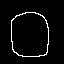
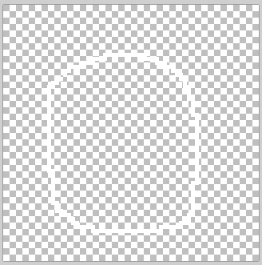
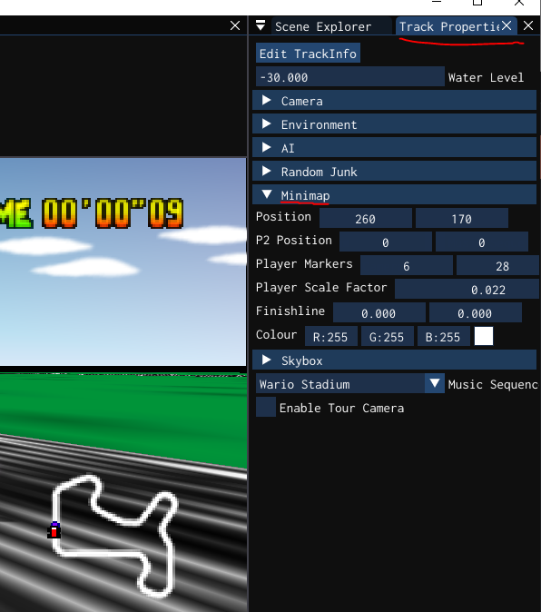

Loading...
Searching...
No Matches
Minimap
Minimap
Create a new minimap.png file using your favourite graphics editor.
There are two options for making a minimap. The outcome is identical.
Format
- Image size of 32x32 to 128x128
- Odd sizes like 64x32 or 128x64 is fine.
- Recommend no bigger than 128x128 but it will work.
- Save as 32-bit
Tips
- Turn off anti-aliasing
- White pixels must be RGB(255, 255, 255)
- Black pixels must be RGB(0, 0, 0)
- Any other pixel colour will turn into white
Option 1: Black Background, White Track
- Use black pixels for the background and white pixels for the track.
- The black pixels will be transparent in-game

- Easiest option to make because it is easy to see the track
Option 2: Transparent Background, White Track
- Transparent pixels must be FULL transparent or they will turn into white pixels

- Transparent version much harder to see the track in the graphics editor.
Export
Place minimap.png in the track folder.
desktop/mycoolmods/tracks/mytrackname/minimap.png
The same folder as the track data that looks like this:
In-game configuration
- In the minimap tab the position of the minimap, finishline, and players markers can be configured.
- The minimap can also be coloured
